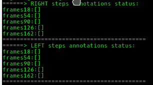
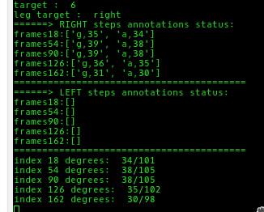
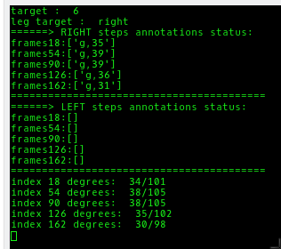
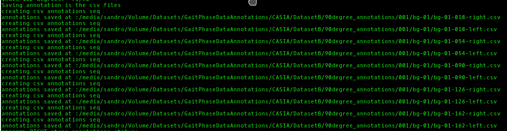
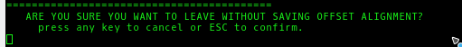

02-CommandOverview
Angelegt Freitag 10 August 2018
Updating the multiviewer files
(~ = ALT+N on Mac
- cd ~/Projects/annotation (press tab)
- git pull origin ibt_release
- enter github user name
- enter github password
Steps to run the multiviewer
- Open Finder and make sure you can access juliette
- CMD + Space ⇒ Finder or open finder from the doc at the bottom of the desktop
- Open Konsole via spotlight and open konsole:
- CMD + Space ⇒ Terminal
- Navigate to multiviewer folder:
- you can within the terminal press tab to use auto-completion
- on mac you can do ~ with ALT + N
- cd ~/Projects/anno (press tab) /src
- activate the multiviewer environment
- source activate multiviewer
- you should now see (multiviewer) before your path
- Start multiviewer IBT version with p_num and subsequence:
- python run_multiviewer_IBT.py --p-num 001 --subsequence bg-01
Navigating the sequences
- Press ö and ä to navigate front and back on the sequences.
- Press 1, 2, 3, 4, 5 to navigate frames18, frames54, frames90, frames126, frames 162.
- Press 1 to select the sequence frames18 for navigation. Then again, press ö and ä to navigate front and back on the sequences.
- press 2 to selection the sequence frames54 for navigation. Then again, press ö and ä to navigate front and back on the sequences.
- ...
- Press w to navigate all sequences at once.
Adding Annotations
- The command line constantly shows you which leg (left or right) you selected
- Press l or r to switch between left and right leg targets
- The command line also constantly shows you all the annotations you created so far
- 
- When navigating the sequences, you can press
- a to annotate an IN_THE_AIR case
- g to annotate an ON_THE_GROUND case
- n to annotate a NOT_IN_FRAME case
- d to dete the last annotation in the list
Example
- Press r to select the right leg as target
- Press g ö a ö to annotate the current frame as ON_THE_GROUND, go 1 frame forward, annotate as IN_THE_AIR, go another frame forward
- This results in the following annotations
- 
- Now press d to get the following
- 
Saving Offsets
- Press j to save the current offset between the sequences.
- You will get a command output with the basename and the filename of the file to save.
- If you already have an offsets file, you have the following 3 options
- Press d to delete the offsets file and NOT save the offsets file
- Press s to overwrite the current offsets file with new offsets file.
- Press any key to continue without any action.
Saving Annotations
- Press c to save the annotations to a csv file
- You can verify the location of the saved through the command line output
- 
Exiting the Multiviewer
- Press ESC
- You will be asked to confirm by pressing ESC again
- 